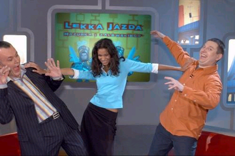

Robert Mazurek i Igor Zalewski, którzy szerokiej publiczności dali się poznać jako autorzy kontrowersyjnej rubryki tygodnika "Wprost" - "Z życia koalicji, z życia opozycji" złośliwie i dowcipnie komentującej polską scenę polityczną, pragną w programie telewizyjnym zachować ironiczny dystans wobec zdarzeń i deklaracji polityków.
Do studia zapraszają prominentnych polityków, by w luźnej, rozrywkowej atmosferze weekendu porozmawiać o bieżących wydarzeniach na polskiej scenie politycznej. Formalnie jest to klasyczny talk show: z żywo reagującą publicznością, ze swobodnym przerzucaniem się z tematu na temat, z żartami, niespodziewanymi materiałami filmowymi, muzycznymi przerywnikami. Jednak ranga gości powoduje, że czasami padają ważkie deklaracje lub ujawniane są ciekawe informacje zza kulis życia politycznego.
Zalewski i Mazurek - przyjaźnie nastawieni do świata i ludzi, ale przecież mocno zniesmaczeni niektórymi zachowaniami polityków, starają się rozmawiać z nimi porzucając dyplomację i język koturnowej publicystyki.
W pierwszym odcinku Mazurek i Zalewski gościli profesora Zbigniewa Religę, jak również barwnego polityka KPN Adama Słomkę. Za stołem miksującym stał DJ Macu. Prowadzącym asystowała zaś modelka Maria Aguero.

Zaproszenia do programu nie odrzucił inny kandydat na prezydenta, Marek Borowski. Lider SdPl był gościem w drugim odcinku "Lekkiej jazdy Mazurka i Zalewskiego". Wypowiedziane przez niego podczas rozmowy słowa "chcecie mnie dobić, to mnie dobijcie", świadczą, że swoich gości gospodarze programu nie oszczędzają. DJ Macu zadbał o oprawę muzyczną, a Maria Aguero przyniosła dla Marka Borowskiego setkę kapsli i whisky.
Trzecia odsłona programu przebiegła pod znakiem prawicy (folklorystycznej). Zygmunt Wrzodak chciał gejów i lesbijki zamykać w szpitalach, a Jacek Kurski po serii pytań zmienił nazwę programu na "Warszawską masakrę piłą mechaniczną". Płytami kręcił DJ Kostek, gościom i gospodarzom asystowała oczywiście Maria.
W czwartym odcinku Mazurek i Zalewski starli się z Janem Rokitą, czyli być może premierem przyszłego rządu. Lider Platformy Obywatelskiej nie krył zdziwienia obecnością w studiu żywej krowy. Po paru minutach rozmowy z dziennikarzami tygodnika "Wprost", Rokita sam rozwiązał tę zagadkę. "Krowa nie zmienia poglądów" - oświeciło polityka PO, któremu Mazurek i Zalewski dowodzili, że w III RP w wielu sprawach (lustracja, dekomunizacja, stosunek do braci Kaczyńskich), zmienił poglądy i to radykalnie.
Józef Oleksy - kolejny gość gospodarzy programu - przekonywał, że jest dobrym liderem SLD. Chyba jednak nie przekonał Mazurka i Zalewskiego, skoro w prezencie otrzymał od nich zabawkę w postaci samochodu-karawanu. Oleksy podarunek przyjął, podkreślając zarazem, że nie czuje się grabarzem własnej partii.
W siódmym odcinku (wreszcie) w roli głównej wystąpiła kobieta. Prosto ze świdnika. Zyta Gilowska, kandydadtka PO na ministra finansów. Po obejrzeniu filmiku o dziwnych przypadkach zachowań dotychczasowych gospodarzy ministerstwa, przyznała, że gmaszysko to ma w sobie coś upiornego, ale ona do strachliwych nie należy. Za odwagę otrzymała wielkanocnego Mazurka (nie Roberta, tylko ciacho).
Wyjątkowy charakter miał następny odcinek programu. Rzymski odcinek. Mazurek i Zalewski (ten ostatni po raz pierwszy "pod krawatem"), gościli u Prymasa Józefa Glempa, w przeddzień rozpoczęcia konklawe. Kardynał nie zdradził na kogo będzie głosował, bo groziłaby mu ekskomunika. Eksomunika nie grozi mu natomiast za to, że opowiedział się za otwartą lustracją polskiego duchowieństwa.
W najbliższą niedzielę, Mazurek i Zalewski gościć będą Zbigniewa Ziobro z PiS - ugrupowania, które ostatnio wyszło na prowadzenie w sondażach popularności partii.

"Lekka jazda Mazurka i Zalewskiego" to program rozrywkowy i publicystyczny w jednym. To gatunek infotainmentu, który ma szansę zyskać wielką sympatię widzów...
EMISJA: TVP 1, niedziela godzina 22:05.
"Lekka jazda Mazurka i Zalewskiego"
Produkcja: Rewolta sp. z o.o. na zlecenie Programu 1 Telewizji Polskiej
Czas trwania: 25 minut
Reżyseria: Andrzej Horubała
Scenografia: Anna Brodnicka